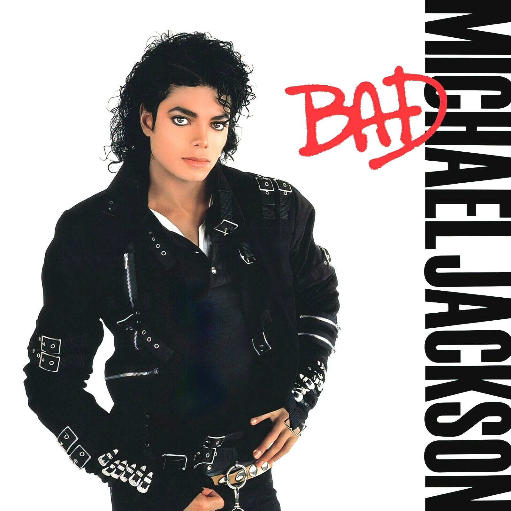

1. Albums
Ben (1972)

Background: Michael’s second solo album during his Motown years.
- Ben
- Greatest Show on Earth
- People Make the World Go Round
- We've Got a Good Thing Going
- Everybody's Somebody's Fool
- My Girl
- What Goes Around Comes Around
- In Our Small Way
- Shoo-Be-Doo-Be-Doo-Da-Day
- You Can Cry on My Shoulder
Off the Wall (1979)

Background: Michael became an adult superstar through disco/funk music.
- Don't Stop 'Til You Get Enough
- Rock with You
- Workin' Day and Night
- Get on the Floor
- Off the Wall
- Girlfriend
- She's Out of My Life
- I Can't Help It
- It's the Falling in Love
- Burn This Disco Out
Thriller (1982)

- Wanna Be Startin' Somethin'
- Baby Be Mine
- The Girl Is Mine
- Thriller
- Beat It
- Billie Jean
- Human Nature
- P.Y.T. (Pretty Young Thing)
- The Lady in My Life
Bad (1987)

- Bad
- The Way You Make Me Feel
- Speed Demon
- Liberian Girl
- Just Good Friends
- Another Part of Me
- Man in the Mirror
- I Just Can't Stop Loving You
- Dirty Diana
- Smooth Criminal
- Leave Me Alone
Dangerous (1991)

- Jam
- Why You Wanna Trip on Me
- In the Closet
- She Drives Me Wild
- Remember the Time
- Can't Let Her Get Away
- Heal the World
- Black or White
- Who Is It
- Give In to Me
- Will You Be There
- Keep the Faith
- Gone Too Soon
- Dangerous
HIStory (1995)

- Scream
- They Don't Care About Us
- Stranger in Moscow
- This Time Around
- Earth Song
- D.S.
- Money
- Come Together
- You Are Not Alone
- Childhood
- Tabloid Junkie
- 2 Bad
- HIStory
- Little Susie / Pie Jesu
- Smile
Invincible (2001)

- Unbreakable
- Heartbreaker
- Invincible
- Break of Dawn
- Heaven Can Wait
- You Rock My World
- Butterflies
- Speechless
- 2000 Watts
- You Are My Life
- Privacy
- Don't Walk Away
- Cry
- The Lost Children
- Whatever Happens
- Threatened
Xscape (2014)
- Love Never Felt So Good
- Chicago
- Loving You
- A Place with No Name
- Slave to the Rhythm
- Do You Know Where Your Children Are
- Blue Gangsta
- Xscape